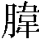
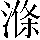
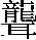
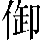
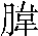

體道第一
道可道，謂經術政教之道也。非常道；非自然長生之道也。常道當以無爲養神，無事安民，含光藏暉，滅迹匿端，不可稱道。名可名，謂富貴尊榮高世之名也。非常名。非自然常在之名也。常名愛如嬰兒之未言，[1]雞子之未分，明珠在蚌中，美玉處石間，内雖昭昭，外如愚頑。無名，天地之始；無名者，謂道。道無形，故不可名也。始者，道本也，[2]吐氣布化，出於虚無，爲天地本始也。有名，萬物之母。有名，謂天地。天地有形位、陰陽，有柔剛，是其有名也。萬物母者，天地含氣，生萬物，長大成熟，[3]如母之養子。故常無欲以觀其妙，妙，要也。人常能無欲，則可以觀道之要。[4]要謂一也。一，出布名，道讚叙，明是非。常有欲以觀其徼。徼，歸也。常有欲之人可以觀世俗之所歸趣也。徼，古吊反。此兩者，同出而異名，兩者，謂有欲、無欲也。同出者，同出人心也。而異名者，所名各異也。名無欲者長存，名有欲者亡身也。同謂之玄。玄，天也。言有欲之人與無欲之人，同受氣於天。玄之又玄，天中復有天也。禀氣有厚薄，得中和滋液則生賢聖，[5]得錯亂污辱則生貪淫也。衆妙之門。能知天中復有天，禀氣有厚薄，[6]除情去欲，[7]守中和，是謂知道要之門户也。
養身第二
天下皆知美之爲美，自揚己美使顯彰也。斯惡已；有危亡也。皆知善之爲善，有功名也。斯不善已。人所争也。故有無相生，見有而爲無也。難易相成，見難而爲易也。長短相形，見短而爲長也。高下相傾，見高而爲下也。傾，去營反。音聲相和，上唱下必和也。前後相隨。上行下必隨也。是以聖人處無爲之事，以道治也。行不言之教，以身師導之也。萬物作焉各自動也。[8]而不辭，不辭謝而逆止。生而不有，元氣生萬物而不有。爲而不恃，道所施爲，不恃望其報也。[9]功成而弗居。功成事就，退避不居其位。夫唯弗居，夫惟功成不居其位。是以不去。福德常在，不去其身也。此言不行不可隨，不言不可知。疾上六句有高下長短，君開一源，下生百端，百端之變，無不動亂。
安民第三
不尚賢，賢謂世俗之賢，辯口明文，離道行權，去質爲文也。不尚者，不貴之以禄，不貴之以官。使民不争；不争功名，返自然也。不貴難得之貨，言人君不御好珍寶，黄金棄於山，珠玉捐於淵。使民不爲盗；上化清静，下無貪人。不見可欲，放鄭聲，遠美人。使心不亂。不邪淫，不惑亂也。[10]是以聖人之治，説聖人治國與治身同也。[11]虚其心，除嗜欲，去亂煩。實其腹，懷道抱一，守五神也。弱其志，和柔謙讓，不處權也。強其骨。愛精重施，髓滿骨堅。常使民無知無欲，反朴守淳。使夫知者不敢爲也。思慮深，不輕言。夫，音符。知，音智。爲無爲，不造作，動因循。則無不治。德化厚，百姓安。
無源第四
道冲而用之，冲，中也。道匿名藏譽，其用在中。冲，直隆反。或不盈。或，常也。道常謙虚，不盈滿。淵乎似萬物之宗，道淵深不可知也，似爲萬物之宗祖。挫其鋭，鋭，進也。人欲鋭精進取功名，[12]當挫上之，法道不自也。挫，子卧反。鋭，悦歲反。[13]解其紛，紛，結根也。[14]當念道無爲以解釋。紛，拂云反。和其光，言雖有獨見之明，當知闇昧，[15]不當以擢亂人也。同其塵，常與衆庶同垢塵，不當自别殊。湛兮似若存。言當湛然安静，故能長存不亡。湛，直减反。吾不知誰之子，老子言我不知道所從生。象帝之先。道自在天帝之前。[16]此言道乃先天地之生也。至今在者，以能安静湛然，不勞煩。欲使人修身法道。
虚用第五
天地不仁，天施地化，不以仁恩，任自然也。以萬物爲芻狗；天地生萬物，人最爲貴，天地視之如芻草狗畜，不责望其報也。芻，楚狗反。狗，古口反。聖人不仁，聖人愛養萬民，不以仁恩，法天地行自然。以百姓爲芻狗。聖人視百姓如芻草狗畜，不责望其禮意。天地之間，天地之間，空虚和氣流行，故萬物自生。人能除情欲，節滋味，清五藏，則神明居之也。其猶橐籥乎。橐籥中空虚，人能有聲氣。橐，他各反。籥，音樂。[17]虚而不屈，動而愈出。言空虚無有屈竭時，動摇之益出聲氣也。愈，羊王反。多言數窮，多事害神，多言害身，口開舌舉，必有禍患。數，王弼注音，雙遇反。不如守中。不如守德於中，育養精神，愛氣希言。
成象第六
谷神不死，谷，養也。人能養神，則不死也。神謂五藏之神也。肝藏魂，肺藏魄，心藏神，腎藏精，脾藏志。五藏盡傷，則五神去矣。是謂玄牝。言不死之有，[18]在於玄牝。玄，天也，於人爲鼻。牝，地也，於人爲口。天食人以五氣，從鼻入，藏於心。五氣清微，爲精神聰明音聲五性。其鬼曰魂。魂者，雄也，主出入人鼻，與天通，故鼻爲玄也。地食人以五味，從口入，藏於胃。五味濁辱，[19]爲形骸骨肉血脈六情。其鬼曰魄。魄者，雌也，主出入於口，與天地通，[20]故口爲牝也。牝，頻忍反。玄牝之門，是謂天地根。根，元也。言鼻口之門，是乃通天地之元氣所從往來。[21]綿綿若存，鼻口呼噏喘息，[22]當綿綿微妙，若可存，復若無有。用之不勤。用氣常寬舒，不當急疾勤勞也。
韜光第七
天長地久。説天地長生久壽，以喻教人也。[23]天地所以能長且久者，以其不自生，天地所以獨長且久者，以其安静，施不榮報，[24]不如人居處汲汲求自饒之利，奪人以自與。故能長生。以其不求生，故能長生不終也。是以聖人後其身先人而後己者也。而身先，天下敬之，先以爲長。[25]外其身薄己而厚人也。而身存，百姓愛之如父母，神明祐之若赤子，故身常存。非以其無私邪？聖人爲人所愛，神明所祐，非以其公正無私所致乎？故能成其私。人以爲私者，欲以厚己也。聖人無私而己自厚，故能成其私也。
易性第八
上善若水。上善之人，如水之性。水善利萬物水在天爲霧露，在地爲泉源也。而不争，處衆人之所惡，衆人惡卑濕垢濁，水獨静流居之也。惡，烏路反。故幾於道。水性幾於道同。居善地，水性善喜於地，草木之上，[26]即流而下，有似於牝動而下人也。心善淵，水深空虚，淵深清明。與善仁，[27]萬物得水以生，與虚不與盈也。言善信，水内影照形，不失其情也。正善治，[28]无有不洗，清且平也。事善能，能方能圓，曲直隨形。動善時。夏散冬凝，應期而動，不失天時。夫唯不争，壅之則止，決之則流，聽從人也。故無尤。水性如是，故天下無有怨尤水者也。
運夷第九
持而盈之，[29]不如其已；盈，滿也；已，止也。持滿必傾，不如止也。揣而鋭之，不可長保。揣，治也。先揣之後必棄捐。揣，初委反。金玉滿堂，莫之能守。嗜欲傷神，財多累身。富貴而驕，自遺其咎。夫富當赈貧，貴當憐賤，而反驕恣，必被禍患也。遺，唯季反。咎，求九反。功成名遂身退，天之道。言人所爲，功成事立，名迹稱遂，不退身避位，則遇於害，此乃天之常道也。譬如日中則移，月滿則虧，物盛則衰，樂極則哀。
能爲第十
載營魄，營魄，魂魄也。人載魂魄之上，得以生，當愛養之。喜怒亡魂，卒驚傷魄。魂在肝，魄在肺，美酒甘肴，腐人

肺。[30]故魂静志道不亂，魄安得壽延年也。[31]抱一，能無離。[32]言人能抱一，使不離於身，則長存。一者，道始所生，太和之精氣也，故曰一。布名於天下，天得一以清，地得一以寧，侯王得一以爲正平。入爲心，出爲行，布施爲德，揔名爲一。一之爲言志一无二也。[33]離，力智反。專氣致柔，專守精氣使不亂，[34]則形體能應之而柔順。能孾兒。[35]能如孾兒，内无思慮，外無政事，則精神不去也。滌除玄覽，當洗其心，使潔净也。心居玄冥之處，覽知萬事，故謂之玄覽也。
，徒歷反。能無疵。[36]不淫邪也。净能無疵病乎？[37]疵，在斯反。愛民治國，治身者，愛氣則身全；治國者，愛民則國安。能無知。[38]治身者，呼吸精氣，无令耳聞也；治國者，布施惠德，[39]無令下知也。天門開闔，天門，謂北極紫微宫。開闔，謂終始五際也。治身，[40]天門謂鼻孔，開謂喘息，闔謂呼吸也。闔，户腊反。能無雌。[41]治身當如雌牝，安静柔弱；治國應變，[42]和而不唱。明白四達，言達明白如日月四通，[43]滿於天下八極之外。故曰視之不見，聽之不聞，彰布之於十方，焕焕煌煌也。能無知。[44]无有能知道滿於天下者。生之畜之，道生萬物而畜養之。生而不有，道生萬物無所取有。爲而不恃，道所施爲，不恃望其報也。長而不宰，道長養萬物，不宰割以爲器用。長，丁文反。是謂玄德。言道行德玄冥，不可得見，欲使人如道也。無用第十一
三十輻，共一轂，古者車三十輻，法月數也。共一轂者，轂中有孔，故衆輻共凑之。治身者當除情去欲，使五藏空虚，神乃歸之也。治國者寡能揔衆，[45]弱共使強。轂，古木反。[46]當其無，有車之用。无，謂空虚。轂中空虚，車得去行。[47]轝中空虚，人能載其上也。[48]當，丁浪反。埏埴以爲器，埏，和也。埴，土也。和土以爲飲食之器。埏，始然反。埴，市力反。當其無，有器之用。器中空虚，故得有所盛受。鑿户牖以爲室，謂作屋室。當其無，有室之用。言户牖空虚，人得以出入觀視；室中空虚，人得以居處，是其用。故有之以爲利，利，物也，利於形用，[49]器中有物。室中有人，恐其屋破壞；腹中有神，畏形之消亡也。無之以爲用。言虚空者乃可用盛受萬物，[50]故曰虚無能制有形。道者，空也。
檢欲第十二
五色令人目盲，貪淫好色，則傷精失明也。令，力征文。盲，陌庚反。五音令人耳聾，好聽五音，則和氣去心，不能聽無聲之聲。

，力東反。五味令人口爽，爽，亡也。[51]人嗜五味於口，[52]則口亡言失於道味也。[53]馳騁田獵令人心發狂，人精神好安静，馳騁呼吸，精神散亡，故發狂也。騁，敕領反。難得之貨令人行妨。妨，傷也。難得之貨，謂金銀珠玉。心貪意欲，不知厭足，則行傷身辱也。行，下孟反。妨，音方。是以聖人爲腹守五性，去六情，節志氣，養神明。不爲目，目不妄視，妄視泄精於外。[54]故去彼取此。去彼目之妄視，取此腹之養性。去，羌吕反。厭恥第十三
寵辱若驚，身寵亦驚，身辱亦驚。貴大患若身。貴，畏也。若，至也。畏大患至身，故皆驚。何謂寵辱？問何爲寵，何爲辱。寵者，尊榮；辱者，恥辱及身。還自問者，以曉人也。辱爲下，[55]辱爲下賤。得之若驚，得寵榮驚者，處高位如臨深危也。[56]貴不敢驕，富不敢奢。失之若驚，失者，失寵處辱也。驚者，恐禍重來也。是謂寵辱若驚。解上得之若驚，失之若驚。何謂貴大患若身？復還自問，何故畏人若身。[57]吾所以有大患者，爲吾有身。吾所以有大患者，爲吾有身。[58]有身，[59]憂其勤勞，念其飢寒，觸情從欲，則遇禍患也。及吾無身，吾何有患？使吾無有身體，[60]得道自然，[61]輕舉昇雲，出入無間，與道通神，當有何患？故貴以身爲天下者，則可寄於天下；[62]言人君貴其身而賤人，[63]欲爲天下主者，[64]則可寄立，不可以久也。爲，去僞反。愛以身爲天下者，乃可以托於天下。言人君能愛其身，非爲己也，乃欲爲萬民之父母，以此得爲天下主者，[65]乃可以托其身於萬民之上，長无咎也。
贊玄第十四
視之不見，名曰夷；無色曰夷。言一無采色，不可得視而見之。聽之不聞，名曰希；無聲曰希。言一無音聲，不可得聽而聞之。搏之不得，名曰微。無形曰微。言一無形體，不可摶持而得之。此三者，不可致詰，三者，謂夷、希、微也。不可致詰者，夫無色、無聲、無形，口不能言，書不能傳，當受之以静，求之以神，不可詰問而得之也。詰，起吉反。[66]故混而爲一。混，合也。故合於三名之而爲一。混，户本反。其上不皦，言一在天上，不皦皦光明。其下不昧，言一在天下，不昧昧有所闇冥。昧，梅對反。繩繩不可名，繩繩者，動行無窮極也。不可名者，非一色也，不可以青、黄、白、黑别。非一聲也，不可以宫、商、角、徵、羽聽。非一形也，不可以長、短、大、小度之也。復歸於無物。物，質也。復當歸之於無質。是謂無狀之狀，言一無形狀，而能爲萬物作形狀也。無物之象，一無物質，而爲萬物設形象也。[67]是謂忽恍。[68]一忽忽恍恍者，[69]若存若亡，不可見之也。恍，虚往反。迎之不見其首，[70]一無端末，不可預待也。除情去欲，一自歸之也。隨之不見其後。言一無影迹，不可得而看。[71]執古之道，以御今之有。聖人執守古道，生一以

物，[72]知今當有一也。以知古始，[73]是謂道紀。人能知上古本始有一，是謂知道綱紀也。顯德第十五
古之善爲士者，謂得道之君也。微妙玄通，玄，天也。言其志節玄妙，精與天通也。深不可識。道德深遠，不可識知，内視若盲，反聽若聾，莫知所長。夫唯不可識，故強爲之容：謂下句也。與兮若冬涉川，舉事辄加重慎，與與兮若冬涉川，心猶難之也。強，其文反。猶兮若畏四鄰，其進退猶猶如拘制，[74]若人犯法，畏四鄰知之也。儼兮其若客，如客畏主人，儼然無所造作也。儼，魚撿反。涣兮若冰之將釋，涣者，解散；釋者，消亡。除情去欲，日以空虚。敦兮其若朴，敦者，質厚；朴者，形未分。内守精神，外無文采也。朴，普角反。曠兮其若谷，曠者，寬大；谷者，空虚。不有德功名，無所不包也。[75]渾兮其若濁。渾者，守本真；[76]濁者，不照然也。與衆合同，不自尊。孰能濁以静之徐清？孰，誰也。誰能知水之濁，止而静之，徐徐自清也。孰能安以久動之徐生？[77]誰能安静以久，徐徐以長生也。保此道者不欲盈。保此徐生之道，不欲奢泰盈溢。夫惟不盈，故能蔽不新成。[78]夫唯不盈滿之人，能守蔽不爲新成。蔽者，匿光榮也。新成者，貴功名。[79]
歸根第十六
至虚極，[80]得道之人，[81]捐情去欲，五内清静，至於虚極。守静笃。守清静，行篤厚。萬物並作，作，生也。萬物並生也。吾以觀其復。言吾以觀見萬物，無不皆歸其本也，人當念重本也。夫物芸芸，芸芸者，華葉盛。各復歸其根。言萬物無不枯落，各復反其根而更生。歸根曰静，静謂根也。根安静柔弱，謙卑處下，故不復死也。是謂復命。[82]言安静者，是爲復還性命，使不死也。復命曰常，復命使不死，乃道之所常行也。知常曰明。能知道之所常行，則爲明。不知常，妄作凶。[83]不知道之所常行，妄作巧詐，則失神明，故凶也。知常容，[84]能知道之所常行，去情忘欲，[85]無所不包容也。容乃公，無所不包容，則公正無私，衆邪莫當。公乃王，公正無私，可以爲天下王。治身正，則形一，神明千萬共湊己躬也。王乃天，能王，德合神明，乃與天子。[86]天乃道，德與天通，則與道合同也。道乃久，與道合同，乃能長久。没身不殆。能公、能天、通天、合道四者純備，[87]道德弘遠，無殃無咎，乃與天地俱没，不危殆也。
【注释】
[1]“愛”，慶長本、道藏本并作“當”。
[2]“始者道本也”，慶長本作“天地始者”。
[3]“熟”，慶長本、道藏本并作“就”。
[4]“道”上，慶長本有“大”字。“要”下，道藏本有“妙”字。
[5]“得”上，慶長本有“夫人”二字。
[6]“厚薄”，慶長本作“薄厚”。
[7]“去”，慶長本、道藏本無此字。
[8]“動”下，慶長本、道藏本有“作”字。
[9]“恃”，慶長本作“特”。
[10]“不邪淫，不惑亂也”，慶長本、道藏本無“不惑亂”三字。
[11]“説聖”至“同也”十字，慶長本作“謂聖人治國猶治身也”，道藏本無“同也”二字。
[12]“精”，慶長本、道藏本并作“情”。
[13]“自”下，慶長本、道藏本有“見”字。
[14]“根”，慶長本、道藏本作“恨”。
[15]“知”，慶長本、道藏本并作“如”。
[16]“自在”，慶長本作“似存”。
[17]“人”，慶長本、道藏本作“故”。
[18]“有”，慶長本、道藏本作“道”。
[19]“味”，原作“性”，據道藏本改。
[20]“天”，慶長本、道藏本無此字。
[21]“通”，慶長本無此字。
[22]“噏”，慶長本、道藏本并作“吸”。
[23]“喻”，慶長本作“論”。
[24]“榮”，慶長本、道藏本并作“求”。
[25]“長”上，慶長本有“官”字。
[26]“草”上，慶長本、道藏本有“在”字。
[27]“仁”，道藏本作“人”。
[28]“正”，道藏本作“政”。
[29]“持”，慶長本作“恃”。
[30]“

”，慶長本、道藏本并作“肝”。[31]“得壽”，慶長本作“修德”。
[32]“離”下，慶長本、道藏本有“乎”字。
[33]“志”，慶長本作“至”。
[34]“守”，慶長本無此字。
[35]“孾兒”，慶長本、道藏本并作“如嬰兒乎”。
[36]“疵”下，慶長本、道藏本有“乎”字。
[37]“净能無疵病乎”，慶長本、道藏本無此六字。
[38]“能無知”，慶長本“知”下有“乎”字，道藏本作“能無爲乎”。
[39]“布施惠德”，慶長本作“布德惠施”，道藏本作“布施德惠”。
[40]“治身”，慶長本無此二字。
[41]“雌”下，慶長本、道藏本有“乎”字。
[42]“國”下，慶長本有“當如”二字。
[43]“達”，慶長本、道藏本并作“道”。
[44]“知”下，慶長本、道藏本有“乎”字。
[45]“治國”至“使強”，道藏本無此十一字，慶長本“揔”作“惣”。
[46]“使”，慶長本作“扶”。
[47]“車得去行”，慶長本、道藏本作“輪得轉行”。
[48]“能”，慶長本、道藏本作“得”。
[49]“利物也利於形用”，慶長本作“物利於形”，道藏本“於形”作“形於”。
[50]“萬”，慶長本無此字。
[51]“亡”慶長本作“妄”。
[52]“人嗜五味於口”，道藏本無“於口”二字，慶長本作“人嗜於五味”。
[53]“亡”，慶長本作“妄”。“味”，慶長本無此字。
[54]“妄視”，慶長本無此二字。
[55]“辱”上，慶長本有《老子》原文“寵為上”三字及河上公注“寵爲尊榮也”五字。
[56]“深”，慶長本、道藏本無此字。
[57]“人若身”，慶長本作“大患至身”。
[58]“爲”，慶長本作“坐”。
[59]“有身”，慶長本無此二字。
[60]“無有身體”，慶長本作“無身”。
[61]“得”，慶長本、道藏本作“體”。
[62]“可寄於天下”，慶長本作“可以寄於天下矣”。
[63]“君”下，慶長本有“自”字。
[64]“者”，慶長本無此字。
[65]“得”，慶長本、道藏本作“德”。
[66]“可”下，慶長本有“強”字。
[67]“一無”至“象也”，慶長本“一”上有“言”字，“而”下有“能”字。
[68]“恍”，慶長本、道藏本作“恍”。
[69]“一忽忽恍恍者”，慶長本、道藏本作“言一忽忽恍恍”。
[70]“迎之不見其首”，連同注文“一無”至“之也”十八字，慶長本在下句“隨之不見其後”及注文“這一無影迹不可得而看”之下。
[71]“看”，慶長本作“隨也”，道藏本作“見”。
[72]“生”，慶長本作“主”。
[73]“以”，慶長本作“能”。
[74]“如”，慶長本無此字，道藏本作“若”。
[75]“不有”至“色也”十字，慶長本“功名”作“名功”，“包”下有“容”字。
[76]“本”，原作“舉”，據慶長本、道藏本改。
[77]“動”，慶長本無此字。
[78]“蔽”，慶長本、道藏本作“弊”。
[79]“能守”至“功名”十九字，慶長本、道藏本二“蔽”字均作“弊”。
[80]“至”，道藏本作“致”。
[81]“得道之人”，慶長本作“道人”。道藏本“得”上有“致至也”三字。
[82]“是謂”，慶長本、道藏本作“静曰”。
[83]“妄”，原誤作“萎”，據慶長本、道藏本改。
[84]“常”下，慶長本有“曰”字。
[85]“去情忘欲”，慶長本作“則去情欲”。道藏本作“則除情欲”。
[86]“乃與天子”，慶長本作“與天通也”。道藏本“子”作“通”。
[87]“能天”，慶長本、道藏本作“能王”。
本章完!